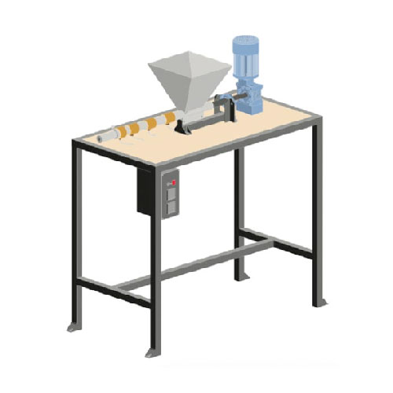

Build an Extrusion Machine
押出成形機の製作
この機械は何ですか？
押出成形は、破砕されたプラスチックがホッパーに入り、加熱され、長いバレルを通してスクリューでプレスされる連続プロセスである。この機械は連続的に稼働するため、十分な量のプラスチックと合理的な工程があれば、（技術的には）24時間365日リサイクルすることができる。
プロヒント：効率と多様性を高めるために、圧縮スクリューを備えたエクストルーダーのアップグレードをお勧めします。
この機械を使えば、フィラメントを作ったり（難しいが可能だ）、粒状にしたり、創造性を発揮して金型の周りにこの連続した線を紡いだりすることができる。プラスチックが押し出されると、異なる色がうまく混ざり合い、均質できれいな色になります。
技術情報
| 📓 Type | Extrusion Machine |
|---|---|
| 💎 Version | 2.0 |
| 💰 Price new material in NL | +/- €500 + motor |
| 💰 Price scrap material in NL | +/- €200 |
| ⚖️ Weight | 35 kg |
| 📦 Dimensions | 500 x 1020 x 1120 mm |
| ⚙️ Screw size | 26 x 600 mm wood auger |
| ⏱ Max running time | 4H/Day |
| 🔌 Voltage | 380V |
| ⚡️ AMP | 5.8A |
| ♻️ Input Flake Size | Medium, Small |
| - Nominal Power | 1.5 kW minimum. |
| - Nominal Torque | 109 Nm |
| - Output Speed | 40-140 r/min |

3Dモデル
必要な機械と技術
| Build Extrusion | Machines needed | Skills needed |
|---|---|---|
|  | - Drill press - Welding machine (not specific) - Angle grinder | - Welding (intermediate) - Assembling (intermediate) - Electronics (intermediate) |
⚡️ 電子ボックス
本機内部の電気部品の説明。詳細と回路図はダウンロードキットにあります。
PIDコントローラー：マシンの頭脳で、希望の温度を設定できます。PV（ポイント変数）がSV（設定値）に一致するまで、ヒーターに電力を送ります。これは、熱電対とSSRからの読み取り値を使用して行われます。 SSR: ソリッドステートリレーは、（PIDからの）信号に応じて開閉する電子「スイッチ」です。 熱電対：基本的には温度計。 バンドヒーター：パイプの周囲に取り付ける発熱体。 電源スイッチ：メカニカルスイッチ。 LED インジケーター: 電源が入ると光る LED (電源スイッチによく付いています)。 電源ケーブル：一般的な家庭用電源ケーブル。
プロからのアドバイス：ここにエレクトロニクスに関する良いフォーラム・トピックがある。
🛠作業中のヒントとコツ
- モーターとカップリングのアライメントは重要で、少しでもずれがあると、将来的に摩耗や破損を引き起こす可能性があります。そのため、プレートに穴を開け、モーターに取り付けることをお勧めします。位置を合わせてから、プレートをフレームに溶接します。
- 使用するボルトは、時間の経過とともに緩むのを防ぐため、ロックナットを併用すること。
- ギアシステムを選択する際は、押し出しスクリューがギアボックスに横方向の圧力を加えることを念頭に置いてください。ガーデンマルチャーのモーターなど、バックプレートのないリニアシステムの使用は避けてください。
- 方向荷重に対応できるベアリングを選ぶ（テーパーベアリングなど）
- この機械にVFDを取り付ければ、夢のような使い方ができる。
♻️ 入出力
タイプ： HDPE、LDPE、PP、PS
フレークサイズ: <5mm
出力：ノズルにより異なる、±5kg/h
。
⚙️ 走行＆メンテナンス
電子ボックス上のコントローラーから温度を設定できる。ヒーターエレメントは2つのグループに配線されており、ノズルとバレルはコントローラーの上部にマークされています。最初の3つのエレメント（バレル）は、ノズルに近い最後のエレメントよりも少し低い温度に設定する必要があります。これは、プラスチックが出てくる直前に最後の熱を加えるためです。下の図は、私たちの実験に基づいた、このマシンの最適な設定を示したものです（ヒント：何が一番効果的か、ご自分で試してみてください）。以下の最適温度は、70rmpで回転するモーターを使用して描かれています。モーターの回転が速い場合は、プラスチックがバレル内を速く流れて溶ける時間が短くなるため、より高い温度が必要になります。
プロからのアドバイス：出力/金型を安定させ、生活を楽にするために、スタンドを作る。
押出機の操作方法
1.マシンを希望の温度に加熱する。
2.20分待つ。
3.ホッパーに希望のプラスチックを入れる。
4.モーターの電源を入れます。
5.最初の2分間、機械から出てくる材料は、以前のセッションで出た古いプラスチックを機械から取り除くためのものである。
6.これでマシンは生産準備が整った！
トラブルシューティング
- KタイプのPID設定 - Jタイプへの変更（Ask vincent）
- 機械のジャム？モーター配線の極を逆にする。
- 押し出し成形の最も一般的な問題は、出力が均一でないことです。これが起こる理由はいくつかあります：
1.プラスチックが汚れてノズルが詰まり、プラスチックが出にくくなることがある。 2.2つの異なる種類のプラスチックが混在している場合、一般的な原因として、選別段階での汚染や、前の作業でバレルに残ったプラスチックが考えられます。この場合、一方のプラスチックは溶けるが、他方のプラスチックは溶けないため、ノズルを流れるプラスチックは妨げられない。 3.温度が十分に高くないため、バレル内のプラスチックが完全に溶けない。
4.上記の問題は、原料の完全性と純度をチェックするか、温度を上げることで解決できます。工程を調整したら、新しい製品を作る前に必ず樽全体を空にしてください。
🌦 長所と短所
| Pros | Cons |
|---|---|
| Continuous output | Complex to build |
| Relatively cheap | Not built to run long |
| Large products possible | Output is low |
| User Friendly |
🌎 コミュニティによって建設された


🙌 役立つリンク
- シュレッダー＆エクストルーダー - 産業用エレクトロニクス ](https://davehakkens.nl/community/forums/topic/shredder-and-extrusion-industrial-electronics-2/)
- 押出ビーム試験
- V4ビーム・プロダクション
- V4押出製品
- V4チューブ＆プロファイル
- V4押出金型
- ハウツー：梁型
- ハウツー：フラットノズル
- ハウツー：さまざまなテクスチャー
- ハウツー：ベンチ
- How-to: Shelf
- ハウツー：ガラスの梁
**助けが必要な場合、質問がある場合、孤独な寒いワークスペースで話せる人を探している場合。Discordの#buildチャンネルへどうぞ。ここでは機械についてオタクな話をします。